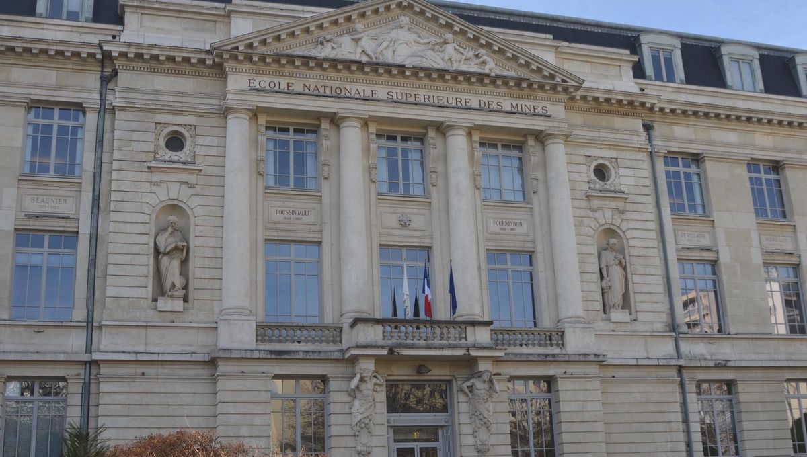
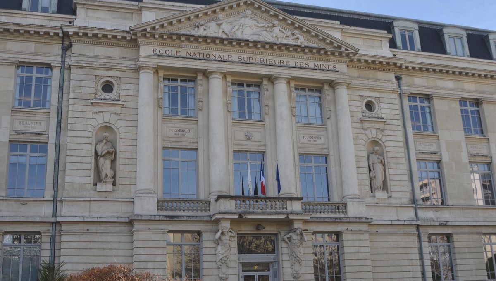

Créée en 1816, l'École des Mines de Saint‐Étienne fait
partie des plus anciennes écoles d’ingénieurs de France. Forte d’un réseau
Alumni de plus de 6000 ingénieurs, l’école rayonne en France et à l'international
notamment grâce à ses 5 laboratoires de recherche. Elle forme des étudiants ingénieurs
et délivre le diplôme d’Ingénieur civil des Mines (ICM), diplôme d’ingénieur généraliste.
 

L'école des mines de Saint-étienne